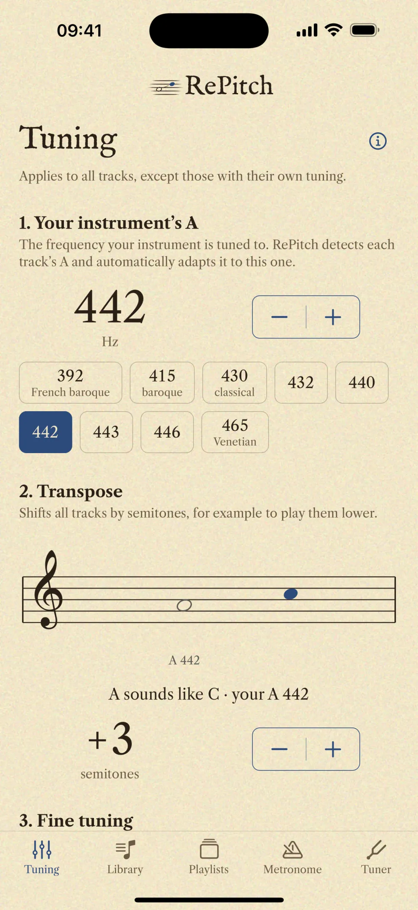
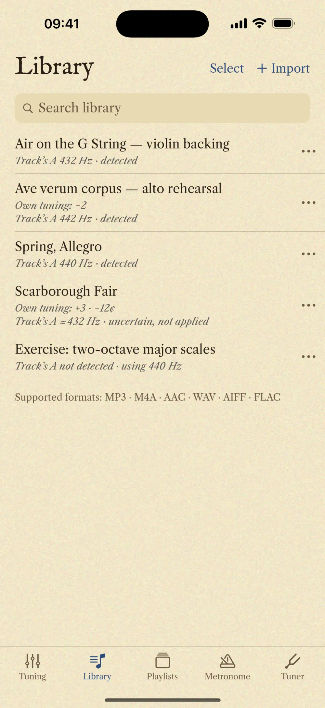
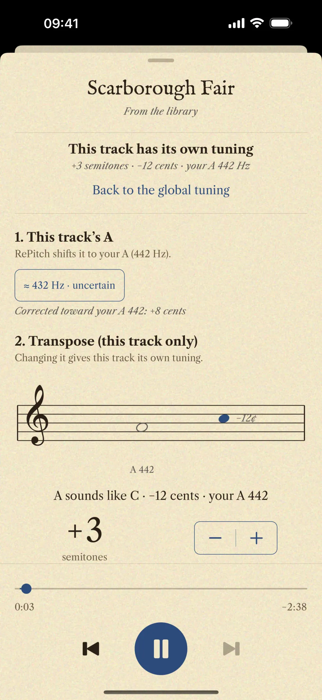

Your A
Choose the A of your instrument, from 392 to 465 Hz in steps of one hertz: 415 for Baroque, 432, 440, 442, 443. It applies to every track, along with transposition in semitones and fine tuning in cents.
RePitch re-tunes your own recordings in real time, without touching the tempo. Set the A of your instrument, and it detects the A of every track and matches one to the other.

Baroque ensembles play at A 415 Hz, the modern orchestra at 440. RePitch brings every recording to the A you choose.
Choose the A of your instrument, from 392 to 465 Hz in steps of one hertz: 415 for Baroque, 432, 440, 442, 443. It applies to every track, along with transposition in semitones and fine tuning in cents.

Track’s A 441 Hz · detected
Every recording has its own tuning. RePitch detects its A, so you never have to hunt for it, and works out the difference between the track and your instrument on its own.
If a track needs different tuning, open it in the player and give it semitones and cents of its own. Every other track stays on your global tuning, and this one will be just as you left it the next time you open it.

Free. No account. No ads. Works offline. Collects no data at all.
Your tracks stay on your device. Read the privacy policy
RePitch is free and independently developed, by one person. If it helps your practice, you can support its development with a donation of any amount.
Donate with PayPalThank you: every donation buys more time to work on RePitch.